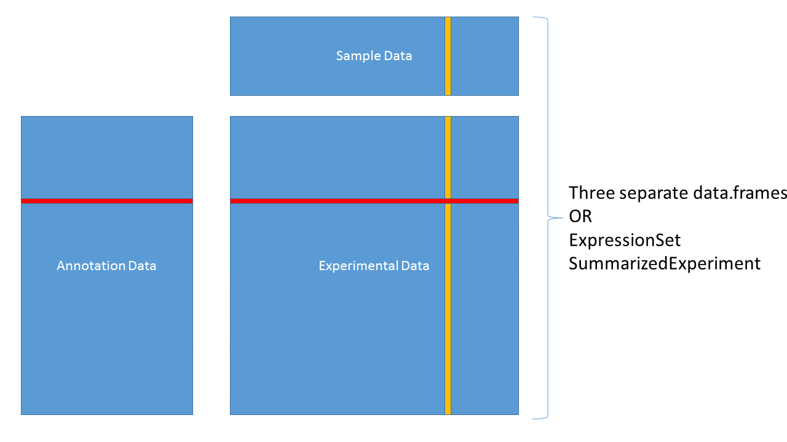

12 Introduction to Bioconductor annotation resources
12.1 Instructors
- James W. MacDonald (jmacdon@uw.edu)
- Lori Shepherd (lori.shepherd@roswellpark.org)
12.2 Workshop Description
There are various annotation packages provided by the Bioconductor project that can be used to incorporate additional information to results from high-throughput experiments. This can be as simple as mapping Ensembl IDs to corresponding HUGO gene symbols, to much more complex queries involving multiple data sources. In this workshop we will cover the various classes of annotation packages, what they contain, and how to use them efficiently.
12.2.1 Prerequisites
- Basic knowledge of R syntax
- Basic understanding of the various annotation sources (NCBI, EBI/EMBL)
Useful background reading
- The AnnotationDbi vignette.
- The biomaRt vignette.
- The GenomicFeatures vignette.
12.2.2 Workshop Participation
After each type of annotation package is introduced, students will be given the opportunity to practice making their own queries.
12.2.3 R / Bioconductor packages used
- AnnotationDbi
- AnnotationHub
- BSgenome
- biomaRt
- ensembldb
- org.Hs.eg.db
- TxDb.Hsapiens.UCSC.hg19.knownGene
- EnsDb.Hsapiens.v79
- EnsDb.Mmusculus.v79
- Homo.sapiens
- BSgenome.Hsapiens.UCSC.hg19
- hugene20sttranscriptcluster.db
12.3 Workshop goals and objectives
Annotating data is a complex task. For any high-throughput experiment the analyst usually starts with a set of identifiers for each thing that was measured, and in order to make the results useful to collaborators these identifiers need to be mapped to other identifiers that are either more familiar to collaborators, or that can be used for further analyses. As an example, RNA-Seq data may only have Entrez Gene IDs for each gene measured, and as part of the output you may want to include the gene symbols, which are more likely to be familiar to a Biologist.
12.3.1 Learning goals
- Understand what sort of annotation data are available
- Understand the difference between annotation sources (NCBI and EBI/EMBL)
- Gain familiarity with the various ways to query annotation packages
- Get some practice making queries
12.3.2 Learning objectives
- Be able to use select and mapIds to map between identifiers
- Be able to extract data from TxDb and EnsDb packages
- Be able to make queries using biomaRt
- Extract and utilize various data from AnnotationHub
12.4 Annotation Workshop
12.4.1 Goals for this workshop
Learn about various annotation package types
Learn the basics of querying these resources
Discuss annotations in regard to Bioc data structures
Get in some practice
12.4.2 What do we mean by annotation?
Map a known ID to other functional or positional information

12.4.3 Specific goal
We have data and statistics, and we want to add other useful information

The end result might be as simple as a data.frame or HTML table, or as complex as a RangedSummarizedExperiment
12.4.4 Data containers

12.4.5 ExpressionSet
load(system.file("extdata/eset.Rdata", package = "Bioc2018Anno"))
eset
#> ExpressionSet (storageMode: lockedEnvironment)
#> assayData: 33552 features, 6 samples
#> element names: exprs
#> protocolData: none
#> phenoData
#> sampleNames: GSM2194079 GSM2194080 ... GSM2194084 (6 total)
#> varLabels: title characteristics_ch1.1
#> varMetadata: labelDescription
#> featureData
#> featureNames: 16657436 16657440 ... 17118478 (33552 total)
#> fvarLabels: PROBEID ENTREZID SYMBOL GENENAME
#> fvarMetadata: labelDescription
#> experimentData: use 'experimentData(object)'
#> Annotation: pd.hugene.2.0.st12.4.6 ExpressionSet (continued)
head(exprs(eset))
#> GSM2194079 GSM2194080 GSM2194081 GSM2194082 GSM2194083 GSM2194084
#> 16657436 8.505158 9.046577 8.382674 9.115481 8.715343 8.566301
#> 16657440 7.948860 8.191222 7.901911 8.459781 8.191793 8.219658
#> 16657450 10.932934 11.228553 10.948120 11.462231 11.300046 11.300886
#> 16657469 9.172462 9.344630 9.193450 9.465584 9.464020 9.135715
#> 16657473 6.222049 6.551035 6.000246 6.398798 5.892654 5.592125
#> 16657476 8.514300 8.474073 8.407196 8.811238 8.780833 8.874606
head(pData(phenoData(eset)))
#> title characteristics_ch1.1
#> GSM2194079 SW620-miR625-rep1 shRNA: miR-625-3p
#> GSM2194080 SW620-miR625-rep2 shRNA: miR-625-3p
#> GSM2194081 SW620-miR625-rep3 shRNA: miR-625-3p
#> GSM2194082 SW620-scramble-rep1 shRNA: scramble
#> GSM2194083 SW620-scramble-rep2 shRNA: scramble
#> GSM2194084 SW620-scramble-rep3 shRNA: scramble12.4.7 ExpressionSet (continued)
head(pData(featureData(eset)))
#> PROBEID ENTREZID SYMBOL
#> 16657436 16657436 84771 DDX11L2
#> 16657440 16657440 100302278 MIR1302-2
#> 16657450 16657450 402483 LINC01000
#> 16657469 16657469 140849 LINC00266-1
#> 16657473 16657473 729759 OR4F29
#> 16657476 16657476 388574 RPL23AP87
#> GENENAME
#> 16657436 DEAD/H-box helicase 11 like 2
#> 16657440 microRNA 1302-2
#> 16657450 long intergenic non-protein coding RNA 1000
#> 16657469 long intergenic non-protein coding RNA 266-1
#> 16657473 olfactory receptor family 4 subfamily F member 29
#> 16657476 ribosomal protein L23a pseudogene 8712.4.8 BioC containers vs basic structures
12.4.8.1 Pros
Validity checking
Subsetting
Function dispatch
Automatic behaviors
12.4.8.2 Cons
Difficult to create
Cumbersome to extract data by hand
Useful only within R
12.4.9 Annotation sources
| Package type | Example |
|---|---|
| ChipDb | hugene20sttranscriptcluster.db |
| OrgDb | org.Hs.eg.db |
| TxDb/EnsDb | TxDb.Hsapiens.UCSC.hg19.knownGene; EnsDb.Hsapiens.v75 |
| OrganismDb | Homo.sapiens |
| BSgenome | BSgenome.Hsapiens.UCSC.hg19 |
| Others | GO.db; KEGG.db |
| AnnotationHub | Online resource |
| biomaRt | Online resource |
12.4.10 Interacting with AnnoDb packages
The main function is select:
select(annopkg, keys, columns, keytype)
Where
annopkg is the annotation package
keys are the IDs that we know
columns are the values we want
- keytype is the type of key used
- if the keytype is the central key, it can remain unspecified
12.4.11 Simple example
Say we have analyzed data from an Affymetrix Human Gene ST 2.0 array and want to know what the genes are. For purposes of this lab, we just select some IDs at random.
library(hugene20sttranscriptcluster.db)
set.seed(12345)
ids <- featureNames(eset)[sample(1:25000, 5)]
ids
#> [1] "16908472" "16962185" "16920686" "16965513" "16819952"
select(hugene20sttranscriptcluster.db, ids, "SYMBOL")
#> 'select()' returned 1:1 mapping between keys and columns
#> PROBEID SYMBOL
#> 1 16908472 LINC01494
#> 2 16962185 ALG3
#> 3 16920686 <NA>
#> 4 16965513 <NA>
#> 5 16819952 CBFB12.4.12 Questions!
How do you know what the central keys are?
If it’s a ChipDb, the central key are the manufacturer’s probe IDs
It’s sometimes in the name - org.Hs.eg.db, where ‘eg’ means Entrez Gene ID
You can see examples using e.g., head(keys(annopkg)), and infer from that
But note that it’s never necessary to know the central key, as long as you specify the keytype
12.4.13 More questions!
What keytypes or columns are available for a given annotation package?
keytypes(hugene20sttranscriptcluster.db)
#> [1] "ACCNUM" "ALIAS" "ENSEMBL" "ENSEMBLPROT"
#> [5] "ENSEMBLTRANS" "ENTREZID" "ENZYME" "EVIDENCE"
#> [9] "EVIDENCEALL" "GENENAME" "GO" "GOALL"
#> [13] "IPI" "MAP" "OMIM" "ONTOLOGY"
#> [17] "ONTOLOGYALL" "PATH" "PFAM" "PMID"
#> [21] "PROBEID" "PROSITE" "REFSEQ" "SYMBOL"
#> [25] "UCSCKG" "UNIGENE" "UNIPROT"
columns(hugene20sttranscriptcluster.db)
#> [1] "ACCNUM" "ALIAS" "ENSEMBL" "ENSEMBLPROT"
#> [5] "ENSEMBLTRANS" "ENTREZID" "ENZYME" "EVIDENCE"
#> [9] "EVIDENCEALL" "GENENAME" "GO" "GOALL"
#> [13] "IPI" "MAP" "OMIM" "ONTOLOGY"
#> [17] "ONTOLOGYALL" "PATH" "PFAM" "PMID"
#> [21] "PROBEID" "PROSITE" "REFSEQ" "SYMBOL"
#> [25] "UCSCKG" "UNIGENE" "UNIPROT"12.4.14 Another example
There is one issue with select however.
ids <- c('16737401','16657436' ,'16678303')
select(hugene20sttranscriptcluster.db, ids, c("SYMBOL","MAP"))
#> 'select()' returned 1:many mapping between keys and columns
#> PROBEID SYMBOL MAP
#> 1 16737401 TRAF6 11p12
#> 2 16657436 DDX11L1 1p36.33
#> 3 16657436 LOC102725121 1p36.33
#> 4 16657436 DDX11L2 2q14.1
#> 5 16657436 DDX11L9 15q26.3
#> 6 16657436 DDX11L10 16p13.3
#> 7 16657436 DDX11L5 9p24.3
#> 8 16657436 DDX11L16 Xq28
#> 9 16657436 DDX11L16 Yq12
#> 10 16678303 ARF1 1q42.1312.4.15 The mapIds function
An alternative to select is mapIds, which gives control of duplicates
Same arguments as
selectwith slight differencesThe columns argument can only specify one column
The keytype argument must be specified
An additional argument, multiVals used to control duplicates
mapIds(hugene20sttranscriptcluster.db, ids, "SYMBOL", "PROBEID")
#> 'select()' returned 1:many mapping between keys and columns
#> 16737401 16657436 16678303
#> "TRAF6" "DDX11L1" "ARF1"12.4.16 Choices for multiVals
Default is first, where we just choose the first of the duplicates. Other choices are list, CharacterList, filter, asNA or a user-specified function.
mapIds(hugene20sttranscriptcluster.db, ids, "SYMBOL", "PROBEID", multiVals = "list")
#> 'select()' returned 1:many mapping between keys and columns
#> $`16737401`
#> [1] "TRAF6"
#>
#> $`16657436`
#> [1] "DDX11L1" "LOC102725121" "DDX11L2" "DDX11L9"
#> [5] "DDX11L10" "DDX11L5" "DDX11L16"
#>
#> $`16678303`
#> [1] "ARF1"12.4.17 Choices for multiVals (continued)
mapIds(hugene20sttranscriptcluster.db, ids, "SYMBOL", "PROBEID", multiVals = "CharacterList")
#> 'select()' returned 1:many mapping between keys and columns
#> CharacterList of length 3
#> [["16737401"]] TRAF6
#> [["16657436"]] DDX11L1 LOC102725121 DDX11L2 DDX11L9 DDX11L10 DDX11L5 DDX11L16
#> [["16678303"]] ARF1
mapIds(hugene20sttranscriptcluster.db, ids, "SYMBOL", "PROBEID", multiVals = "filter")
#> 'select()' returned 1:many mapping between keys and columns
#> 16737401 16678303
#> "TRAF6" "ARF1"
mapIds(hugene20sttranscriptcluster.db, ids, "SYMBOL", "PROBEID", multiVals = "asNA")
#> 'select()' returned 1:many mapping between keys and columns
#> 16737401 16657436 16678303
#> "TRAF6" NA "ARF1"12.4.18 ChipDb/OrgDb questions
Using either the hugene20sttranscriptcluster.db or org.Hs.eg.db package,
What gene symbol corresponds to Entrez Gene ID 1000?
What is the Ensembl Gene ID for PPARG?
What is the UniProt ID for GAPDH?
How many of the probesets from the ExpressionSet (eset) we loaded map to a single gene? How many don’t map to a gene at all?
12.4.19 TxDb packages
TxDb packages contain positional information; the contents can be inferred by the package name
TxDb.Species.Source.Build.Table
TxDb.Hsapiens.UCSC.hg19.knownGene
Homo sapiens
UCSC genome browser
hg19 (their version of GRCh37)
knownGene table
TxDb.Dmelanogaster.UCSC.dm3.ensGene TxDb.Athaliana.BioMart.plantsmart22
12.4.20 EnsDb packages
EnsDb packages are similar to TxDb packages, but based on Ensembl mappings
EnsDb.Hsapiens.v79 EnsDb.Mmusculus.v79 EnsDb.Rnorvegicus.v79
12.4.21 Transcript packages
As with ChipDb and OrgDb packages, select and mapIds can be used to make queries
select(TxDb.Hsapiens.UCSC.hg19.knownGene, c("1","10"),
c("TXNAME","TXCHROM","TXSTART","TXEND"), "GENEID")
#> 'select()' returned 1:many mapping between keys and columns
#> GENEID TXNAME TXCHROM TXSTART TXEND
#> 1 1 uc002qsd.4 chr19 58858172 58864865
#> 2 1 uc002qsf.2 chr19 58859832 58874214
#> 3 10 uc003wyw.1 chr8 18248755 18258723
select(EnsDb.Hsapiens.v79, c("1", "10"),
c("GENEID","GENENAME","SEQNAME","GENESEQSTART","GENESEQEND"), "ENTREZID")
#> ENTREZID GENEID GENENAME SEQNAME GENESEQSTART GENESEQEND
#> 1 1 ENSG00000121410 A1BG 19 58345178 58353499
#> 2 10 ENSG00000156006 NAT2 8 18391245 18401218But this is not how one normally uses them…
12.4.22 GRanges
The normal use case for transcript packages is to extract positional information into a GRanges or GRangesList object. An example is the genomic position of all genes:
gns <- genes(TxDb.Hsapiens.UCSC.hg19.knownGene)
gns
#> GRanges object with 23056 ranges and 1 metadata column:
#> seqnames ranges strand | gene_id
#> <Rle> <IRanges> <Rle> | <character>
#> 1 chr19 58858172-58874214 - | 1
#> 10 chr8 18248755-18258723 + | 10
#> 100 chr20 43248163-43280376 - | 100
#> 1000 chr18 25530930-25757445 - | 1000
#> 10000 chr1 243651535-244006886 - | 10000
#> ... ... ... ... . ...
#> 9991 chr9 114979995-115095944 - | 9991
#> 9992 chr21 35736323-35743440 + | 9992
#> 9993 chr22 19023795-19109967 - | 9993
#> 9994 chr6 90539619-90584155 + | 9994
#> 9997 chr22 50961997-50964905 - | 9997
#> -------
#> seqinfo: 93 sequences (1 circular) from hg19 genome12.4.23 GRangesList
Or the genomic position of all transcripts by gene:
txs <- transcriptsBy(TxDb.Hsapiens.UCSC.hg19.knownGene)
txs
#> GRangesList object of length 23459:
#> $1
#> GRanges object with 2 ranges and 2 metadata columns:
#> seqnames ranges strand | tx_id tx_name
#> <Rle> <IRanges> <Rle> | <integer> <character>
#> [1] chr19 58858172-58864865 - | 70455 uc002qsd.4
#> [2] chr19 58859832-58874214 - | 70456 uc002qsf.2
#>
#> $10
#> GRanges object with 1 range and 2 metadata columns:
#> seqnames ranges strand | tx_id tx_name
#> [1] chr8 18248755-18258723 + | 31944 uc003wyw.1
#>
#> $100
#> GRanges object with 1 range and 2 metadata columns:
#> seqnames ranges strand | tx_id tx_name
#> [1] chr20 43248163-43280376 - | 72132 uc002xmj.3
#>
#> ...
#> <23456 more elements>
#> -------
#> seqinfo: 93 sequences (1 circular) from hg19 genome12.4.24 Other accessors
Positional information can be extracted for
transcripts,genes, coding sequences (cds),promotersandexons.Positional information can be extracted for most of the above, grouped by a second element. For example, our
transcriptsBycall was all transcripts, grouped by gene.More detail on these *Ranges objects is beyond the scope of this workshop, but why we want them is not.
12.4.25 Why *Ranges objects
The main rationale for *Ranges objects is to allow us to easily select and subset data based on genomic position information. This is really powerful!
GRanges and GRangesLists act like data.frames and lists, and can be subsetted using the [ function. As a really artificial example:
txs[txs %over% gns[1:2,]]
#> GRangesList object of length 3:
#> $1
#> GRanges object with 2 ranges and 2 metadata columns:
#> seqnames ranges strand | tx_id tx_name
#> <Rle> <IRanges> <Rle> | <integer> <character>
#> [1] chr19 58858172-58864865 - | 70455 uc002qsd.4
#> [2] chr19 58859832-58874214 - | 70456 uc002qsf.2
#>
#> $10
#> GRanges object with 1 range and 2 metadata columns:
#> seqnames ranges strand | tx_id tx_name
#> [1] chr8 18248755-18258723 + | 31944 uc003wyw.1
#>
#> $162968
#> GRanges object with 2 ranges and 2 metadata columns:
#> seqnames ranges strand | tx_id tx_name
#> [1] chr19 58865723-58874214 - | 70457 uc002qsh.2
#> [2] chr19 58865723-58874214 - | 70458 uc002qsi.2
#>
#> -------
#> seqinfo: 93 sequences (1 circular) from hg19 genome12.4.26 *Ranges use cases
Gene expression changes near differentially methylated CpG islands
Closest genes to a set of interesting SNPs
Genes near DNAseI hypersensitivity clusters
Number of CpGs measured over Gene X by Chip Y
12.4.27 SummarizedExperiment objects
SummarizedExperiment objects are like ExpressionSets, but the row-wise annotations are GRanges, so you can subset by genomic locations:

SummarizedExperiment objects are popular objects for representing expression data and other rectangular data (feature x sample data). Incoming packages are now strongly recommended to use this class representation instead of ExpressionSet.
12.4.28 TxDb exercises
How many transcripts does PPARG have, according to UCSC?
Does Ensembl agree?
- How many genes are between 2858473 and 3271812 on chr2 in the hg19 genome?
- Hint: you make a
GRangeslike this -GRanges("chr2", IRanges(2858473,3271812))
- Hint: you make a
12.4.29 OrganismDb packages
OrganismDb packages are meta-packages that contain an OrgDb, a TxDb, and a GO.db package and allow cross-queries between those packages.
All previous accessors work; select, mapIds, transcripts, etc.
library(Homo.sapiens)
Homo.sapiens
#> OrganismDb Object:
#> # Includes GODb Object: GO.db
#> # With data about: Gene Ontology
#> # Includes OrgDb Object: org.Hs.eg.db
#> # Gene data about: Homo sapiens
#> # Taxonomy Id: 9606
#> # Includes TxDb Object: TxDb.Hsapiens.UCSC.hg19.knownGene
#> # Transcriptome data about: Homo sapiens
#> # Based on genome: hg19
#> # The OrgDb gene id ENTREZID is mapped to the TxDb gene id GENEID .12.4.30 OrganismDb packages
Updateable - can change TxDb object
columns and keytypes span all underlying objects
Calls to TxDb accessors include a ‘columns’ argument
head(genes(Homo.sapiens, columns = c("ENTREZID","ALIAS","UNIPROT")),4)
#> 'select()' returned 1:many mapping between keys and columns
#> GRanges object with 4 ranges and 3 metadata columns:
#> seqnames ranges strand | ALIAS
#> <Rle> <IRanges> <Rle> | <CharacterList>
#> 1 chr19 58858172-58874214 - | A1B,ABG,GAB,...
#> 10 chr8 18248755-18258723 + | AAC2,NAT-2,PNAT,...
#> 100 chr20 43248163-43280376 - | ADA
#> 1000 chr18 25530930-25757445 - | CD325,CDHN,CDw325,...
#> UNIPROT ENTREZID
#> <CharacterList> <FactorList>
#> 1 P04217,V9HWD8 1
#> 10 A4Z6T7,P11245 10
#> 100 A0A0S2Z381,P00813,F5GWI4 100
#> 1000 P19022,A0A024RC42 1000
#> -------
#> seqinfo: 93 sequences (1 circular) from hg19 genome12.4.31 OrganismDb exercises
Get all the GO terms for BRCA1
What gene does the UCSC transcript ID uc002fai.3 map to?
How many other transcripts does that gene have?
Get all the transcripts from the hg19 genome build, along with their Ensembl gene ID, UCSC transcript ID and gene symbol
12.4.32 Organism.dplyr package
Combines the data from TxDb and Org.Db associated packages into local database.
- Allows functions from both org.* and TxDb.*
keytypes(),select(), …exons(),promoters(), …
Allows for filtering and display of combined TxDb and Org.Db information through
dplyrfunctions.
library(Organism.dplyr)
#> Loading required package: dplyr
#>
#> Attaching package: 'dplyr'
#> The following objects are masked from 'package:stats':
#>
#> filter, lag
#> The following objects are masked from 'package:base':
#>
#> intersect, setdiff, setequal, union
#> Loading required package: AnnotationFilter
# src = src_organism("TxDb.Hsapiens.UCSC.hg19.knownGene")
src <- src_organism(dbpath = hg38light())
src
#> src: sqlite 3.22.0 [/usr/local/lib/R/site-library/Organism.dplyr/extdata/light.hg38.knownGene.sqlite]
#> tbls: id, id_accession, id_go, id_go_all, id_omim_pm, id_protein,
#> id_transcript, ranges_cds, ranges_exon, ranges_gene, ranges_tx12.4.33 Organism.dplyr
Get promoters from a TxDb object (we use a small version)
options(width = 120)
promoters(src)
#> <SQL>
#> SELECT *
#> FROM `ranges_tx`
#> GRanges object with 88 ranges and 2 metadata columns:
#> seqnames ranges strand | tx_id tx_name
#> <Rle> <IRanges> <Rle> | <integer> <character>
#> uc001hzz.2 chr1 243843037-243845236 - | 15880 uc001hzz.2
#> uc021plu.1 chr1 243843385-243845584 - | 15881 uc021plu.1
#> uc001iab.3 chr1 243843083-243845282 - | 15882 uc001iab.3
#> uc057qvr.1 chr1 243849929-243852128 - | 15883 uc057qvr.1
#> uc057qvt.1 chr1 243614947-243617146 - | 15884 uc057qvt.1
#> ... ... ... ... . ... ...
#> uc064xqh.1 chrUn_GL000220v1 110025-112224 + | 197741 uc064xqh.1
#> uc064xqi.1 chrUn_GL000220v1 112151-114350 + | 197742 uc064xqi.1
#> uc064xqj.1 chrUn_GL000220v1 115428-117627 + | 197743 uc064xqj.1
#> uc064xqk.1 chrUn_GL000220v1 116197-118396 + | 197744 uc064xqk.1
#> uc033dnj.2 chrUn_GL000220v1 153997-156196 + | 197750 uc033dnj.2
#> -------
#> seqinfo: 455 sequences (1 circular) from hg38 genome12.4.34 Organism.dplyr
Extract a table from the underlying database
tbl(src, "id")
#> # Source: table<id> [?? x 6]
#> # Database: sqlite 3.22.0 []
#> entrez map ensembl symbol genename alias
#> <chr> <chr> <chr> <chr> <chr> <chr>
#> 1 1 19q13.4 ENSG00000121410 A1BG alpha-1-B glycoprotein A1B
#> 2 1 19q13.4 ENSG00000121410 A1BG alpha-1-B glycoprotein ABG
#> 3 1 19q13.4 ENSG00000121410 A1BG alpha-1-B glycoprotein GAB
#> 4 1 19q13.4 ENSG00000121410 A1BG alpha-1-B glycoprotein HYST2477
#> 5 1 19q13.4 ENSG00000121410 A1BG alpha-1-B glycoprotein A1BG
#> 6 10 8p22 ENSG00000156006 NAT2 N-acetyltransferase 2 AAC2
#> 7 10 8p22 ENSG00000156006 NAT2 N-acetyltransferase 2 NAT-2
#> 8 10 8p22 ENSG00000156006 NAT2 N-acetyltransferase 2 PNAT
#> 9 10 8p22 ENSG00000156006 NAT2 N-acetyltransferase 2 NAT2
#> 10 100 20q13.12 ENSG00000196839 ADA adenosine deaminase ADA
#> # ... with more rows12.4.35 Organism.dplyr
Make a complex query between tables in the underlying database
inner_join(tbl(src, "id"), tbl(src, "ranges_gene")) %>%
filter(symbol %in% c("ADA", "NAT2")) %>%
dplyr::select(gene_chrom, gene_start, gene_end,
gene_strand, symbol, alias, map)
#> Joining, by = "entrez"
#> # Source: lazy query [?? x 7]
#> # Database: sqlite 3.22.0 []
#> gene_chrom gene_start gene_end gene_strand symbol alias map
#> <chr> <int> <int> <chr> <chr> <chr> <chr>
#> 1 chr8 18391245 18401218 + NAT2 AAC2 8p22
#> 2 chr8 18391245 18401218 + NAT2 NAT-2 8p22
#> 3 chr8 18391245 18401218 + NAT2 PNAT 8p22
#> 4 chr8 18391245 18401218 + NAT2 NAT2 8p22
#> 5 chr20 44619522 44651742 - ADA ADA 20q13.1212.4.36 Organism.dplyr exercises
How many supported organisms are implemented in Organism.dplyr?
Display the ensembl Id and genename description for symbol “NAT2”.
Show all the alias for “NAT2” in the database.
Display Gene ontology (GO) information for gene symbol “NAT2”.
12.4.37 BSgenome packages
BSgenome packages contain sequence information for a given species/build. There are many such packages - you can get a listing using available.genomes
library(BSgenome)
head(available.genomes())
#> [1] "BSgenome.Alyrata.JGI.v1" "BSgenome.Amellifera.BeeBase.assembly4"
#> [3] "BSgenome.Amellifera.UCSC.apiMel2" "BSgenome.Amellifera.UCSC.apiMel2.masked"
#> [5] "BSgenome.Athaliana.TAIR.04232008" "BSgenome.Athaliana.TAIR.TAIR9"12.4.38 BSgenome packages
We can load and inspect a BSgenome package
library(BSgenome.Hsapiens.UCSC.hg19)
Hsapiens
#> Human genome:
#> # organism: Homo sapiens (Human)
#> # provider: UCSC
#> # provider version: hg19
#> # release date: Feb. 2009
#> # release name: Genome Reference Consortium GRCh37
#> # 93 sequences:
#> # chr1 chr2 chr3 chr4 chr5
#> # chr6 chr7 chr8 chr9 chr10
#> # chr11 chr12 chr13 chr14 chr15
#> # chr16 chr17 chr18 chr19 chr20
#> # chr21 chr22 chrX chrY chrM
#> # ... ... ... ... ...
#> # chrUn_gl000227 chrUn_gl000228 chrUn_gl000229 chrUn_gl000230 chrUn_gl000231
#> # chrUn_gl000232 chrUn_gl000233 chrUn_gl000234 chrUn_gl000235 chrUn_gl000236
#> # chrUn_gl000237 chrUn_gl000238 chrUn_gl000239 chrUn_gl000240 chrUn_gl000241
#> # chrUn_gl000242 chrUn_gl000243 chrUn_gl000244 chrUn_gl000245 chrUn_gl000246
#> # chrUn_gl000247 chrUn_gl000248 chrUn_gl000249
#> # (use 'seqnames()' to see all the sequence names, use the '$' or '[[' operator to access a given sequence)12.4.39 BSgenome packages
The main accessor is getSeq, and you can get data by sequence (e.g., entire chromosome or unplaced scaffold), or by passing in a GRanges object, to get just a region.
getSeq(Hsapiens, "chr1")
#> 249250621-letter "DNAString" instance
#> seq: NNNNNNNNNNNNNNNNNNNNNNNNNNNNNNNNNNNNNNNNNNNNNNNNNNNNNNNN...NNNNNNNNNNNNNNNNNNNNNNNNNNNNNNNNNNNNNNNNNNNNNNNNNNNNNNNN
getSeq(Hsapiens, gns["5467",])
#> A DNAStringSet instance of length 1
#> width seq names
#> [1] 85634 GCGGAGCGTGTGACGCTGCGGCCGCCGCGGACCTGGGGATTAA...ACTTTAAATAAATGGGAATTAAATATTTAAGAGCTGACTGGAA 5467The Biostrings package contains most of the code for dealing with these *StringSet objects - please see the Biostrings vignettes and help pages for more information.
12.4.40 BSgenome exercises
- Get the sequences for all transcripts of the TP53 gene
12.4.41 AnnotationHub
AnnotationHub is a package that allows us to query and download many different annotation objects, without having to explicitly install them.
library(AnnotationHub)
hub <- AnnotationHub()
#> snapshotDate(): 2018-06-27
hub
#> AnnotationHub with 44925 records
#> # snapshotDate(): 2018-06-27
#> # $dataprovider: BroadInstitute, Ensembl, UCSC, ftp://ftp.ncbi.nlm.nih.gov/gene/DATA/, Haemcode, Inparanoid8, Pazar,...
#> # $species: Homo sapiens, Mus musculus, Drosophila melanogaster, Bos taurus, Pan troglodytes, Rattus norvegicus, Dan...
#> # $rdataclass: GRanges, BigWigFile, FaFile, TwoBitFile, Rle, OrgDb, ChainFile, EnsDb, Inparanoid8Db, TxDb
#> # additional mcols(): taxonomyid, genome, description, coordinate_1_based, maintainer, rdatadateadded,
#> # preparerclass, tags, rdatapath, sourceurl, sourcetype
#> # retrieve records with, e.g., 'object[["AH2"]]'
#>
#> title
#> AH2 | Ailuropoda_melanoleuca.ailMel1.69.dna.toplevel.fa
#> AH3 | Ailuropoda_melanoleuca.ailMel1.69.dna_rm.toplevel.fa
#> AH4 | Ailuropoda_melanoleuca.ailMel1.69.dna_sm.toplevel.fa
#> AH5 | Ailuropoda_melanoleuca.ailMel1.69.ncrna.fa
#> AH6 | Ailuropoda_melanoleuca.ailMel1.69.pep.all.fa
#> ... ...
#> AH63655 | phastCons46wayPrimates.UCSC.hg19.chrX.rds
#> AH63656 | phastCons46wayPrimates.UCSC.hg19.chrY.rds
#> AH63657 | Alternative Splicing Annotation for Homo sapiens (Human)
#> AH63658 | Allele data from the IPD IMGT/HLA database
#> AH63659 | Allele data from the IPD KIR database12.4.42 Querying AnnotationHub
Finding the ‘right’ resource on AnnotationHub is like using Google - a well posed query is necessary to find what you are after. Useful queries are based on
Data provider
Data class
Species
Data source
names(mcols(hub))
#> [1] "title" "dataprovider" "species" "taxonomyid" "genome"
#> [6] "description" "coordinate_1_based" "maintainer" "rdatadateadded" "preparerclass"
#> [11] "tags" "rdataclass" "rdatapath" "sourceurl" "sourcetype"12.4.43 AnnotationHub Data providers
unique(hub$dataprovider)
#> [1] "Ensembl" "UCSC"
#> [3] "RefNet" "Inparanoid8"
#> [5] "NHLBI" "ChEA"
#> [7] "Pazar" "NIH Pathway Interaction Database"
#> [9] "Haemcode" "BroadInstitute"
#> [11] "PRIDE" "Gencode"
#> [13] "CRIBI" "Genoscope"
#> [15] "MISO, VAST-TOOLS, UCSC" "UWashington"
#> [17] "Stanford" "dbSNP"
#> [19] "BioMart" "GeneOntology"
#> [21] "KEGG" "URGI"
#> [23] "ftp://ftp.ncbi.nlm.nih.gov/gene/DATA/" "EMBL-EBI"12.4.44 AnnotationHub Data classes
unique(hub$rdataclass)
#> [1] "FaFile" "GRanges" "data.frame"
#> [4] "Inparanoid8Db" "TwoBitFile" "ChainFile"
#> [7] "SQLiteConnection" "biopax" "BigWigFile"
#> [10] "AAStringSet" "MSnSet" "mzRpwiz"
#> [13] "mzRident" "list" "TxDb"
#> [16] "Rle" "EnsDb" "VcfFile"
#> [19] "igraph" "OrgDb" "data.frame, DNAStringSet, GRanges"12.4.45 AnnotationHub Species
head(unique(hub$species))
#> [1] "Ailuropoda melanoleuca" "Anolis carolinensis" "Bos taurus" "Caenorhabditis elegans"
#> [5] "Callithrix jacchus" "Canis familiaris"
length(unique(hub$species))
#> [1] 197112.4.46 AnnotationHub Data sources
unique(hub$sourcetype)
#> [1] "FASTA" "UCSC track" "GTF" "TSV" "Inparanoid" "TwoBit" "Chain"
#> [8] "GRASP" "Zip" "CSV" "BioPax" "BioPaxLevel2" "RData" "BED"
#> [15] "BigWig" "tab" "mzTab" "mzML" "mzid" "GFF" "ensembl"
#> [22] "VCF" "NCBI/ensembl" "NCBI/UniProt"12.4.47 AnnotationHub query
qry <- query(hub, c("granges","homo sapiens","ensembl"))
qry
#> AnnotationHub with 56 records
#> # snapshotDate(): 2018-06-27
#> # $dataprovider: Ensembl, UCSC
#> # $species: Homo sapiens
#> # $rdataclass: GRanges
#> # additional mcols(): taxonomyid, genome, description, coordinate_1_based, maintainer, rdatadateadded,
#> # preparerclass, tags, rdatapath, sourceurl, sourcetype
#> # retrieve records with, e.g., 'object[["AH5046"]]'
#>
#> title
#> AH5046 | Ensembl Genes
#> AH5160 | Ensembl Genes
#> AH5311 | Ensembl Genes
#> AH5434 | Ensembl Genes
#> AH5435 | Ensembl EST Genes
#> ... ...
#> AH60085 | Homo_sapiens.GRCh38.91.gtf
#> AH61125 | Homo_sapiens.GRCh38.92.abinitio.gtf
#> AH61126 | Homo_sapiens.GRCh38.92.chr.gtf
#> AH61127 | Homo_sapiens.GRCh38.92.chr_patch_hapl_scaff.gtf
#> AH61128 | Homo_sapiens.GRCh38.92.gtf12.4.48 AnnotationHub query
qry$sourceurl
#> [1] "rtracklayer://hgdownload.cse.ucsc.edu/goldenpath/hg19/database/ensGene"
#> [2] "rtracklayer://hgdownload.cse.ucsc.edu/goldenpath/hg18/database/ensGene"
#> [3] "rtracklayer://hgdownload.cse.ucsc.edu/goldenpath/hg17/database/ensGene"
#> [4] "rtracklayer://hgdownload.cse.ucsc.edu/goldenpath/hg16/database/ensGene"
#> [5] "rtracklayer://hgdownload.cse.ucsc.edu/goldenpath/hg16/database/ensEstGene"
#> [6] "ftp://ftp.ensembl.org/pub/release-70/gtf/homo_sapiens/Homo_sapiens.GRCh37.70.gtf.gz"
#> [7] "ftp://ftp.ensembl.org/pub/release-69/gtf/homo_sapiens/Homo_sapiens.GRCh37.69.gtf.gz"
#> [8] "ftp://ftp.ensembl.org/pub/release-71/gtf/homo_sapiens/Homo_sapiens.GRCh37.71.gtf.gz"
#> [9] "ftp://ftp.ensembl.org/pub/release-72/gtf/homo_sapiens/Homo_sapiens.GRCh37.72.gtf.gz"
#> [10] "ftp://ftp.ensembl.org/pub/release-73/gtf/homo_sapiens/Homo_sapiens.GRCh37.73.gtf.gz"
#> [11] "ftp://ftp.ensembl.org/pub/release-74/gtf/homo_sapiens/Homo_sapiens.GRCh37.74.gtf.gz"
#> [12] "ftp://ftp.ensembl.org/pub/release-75/gtf/homo_sapiens/Homo_sapiens.GRCh37.75.gtf.gz"
#> [13] "ftp://ftp.ensembl.org/pub/release-78/gtf/homo_sapiens/Homo_sapiens.GRCh38.78.gtf.gz"
#> [14] "ftp://ftp.ensembl.org/pub/release-76/gtf/homo_sapiens/Homo_sapiens.GRCh38.76.gtf.gz"
#> [15] "ftp://ftp.ensembl.org/pub/release-79/gtf/homo_sapiens/Homo_sapiens.GRCh38.79.gtf.gz"
#> [16] "ftp://ftp.ensembl.org/pub/release-77/gtf/homo_sapiens/Homo_sapiens.GRCh38.77.gtf.gz"
#> [17] "ftp://ftp.ensembl.org/pub/release-80/gtf/homo_sapiens/Homo_sapiens.GRCh38.80.gtf.gz"
#> [18] "ftp://ftp.ensembl.org/pub/release-81/gtf/homo_sapiens/Homo_sapiens.GRCh38.81.gtf.gz"
#> [19] "ftp://ftp.ensembl.org/pub/release-82/gtf/homo_sapiens/Homo_sapiens.GRCh38.82.gtf.gz"
#> [20] "ftp://ftp.ensembl.org/pub/release-83/gtf/homo_sapiens/Homo_sapiens.GRCh38.83.gtf.gz"
#> [21] "ftp://ftp.ensembl.org/pub/release-84/gtf/homo_sapiens/Homo_sapiens.GRCh38.84.abinitio.gtf.gz"
#> [22] "ftp://ftp.ensembl.org/pub/release-84/gtf/homo_sapiens/Homo_sapiens.GRCh38.84.chr.gtf.gz"
#> [23] "ftp://ftp.ensembl.org/pub/release-84/gtf/homo_sapiens/Homo_sapiens.GRCh38.84.chr_patch_hapl_scaff.gtf.gz"
#> [24] "ftp://ftp.ensembl.org/pub/release-84/gtf/homo_sapiens/Homo_sapiens.GRCh38.84.gtf.gz"
#> [25] "ftp://ftp.ensembl.org/pub/release-85/gtf/homo_sapiens/Homo_sapiens.GRCh38.85.abinitio.gtf.gz"
#> [26] "ftp://ftp.ensembl.org/pub/release-85/gtf/homo_sapiens/Homo_sapiens.GRCh38.85.chr.gtf.gz"
#> [27] "ftp://ftp.ensembl.org/pub/release-85/gtf/homo_sapiens/Homo_sapiens.GRCh38.85.chr_patch_hapl_scaff.gtf.gz"
#> [28] "ftp://ftp.ensembl.org/pub/release-85/gtf/homo_sapiens/Homo_sapiens.GRCh38.85.gtf.gz"
#> [29] "ftp://ftp.ensembl.org/pub/release-86/gtf/homo_sapiens/Homo_sapiens.GRCh38.86.abinitio.gtf.gz"
#> [30] "ftp://ftp.ensembl.org/pub/release-86/gtf/homo_sapiens/Homo_sapiens.GRCh38.86.chr.gtf.gz"
#> [31] "ftp://ftp.ensembl.org/pub/release-86/gtf/homo_sapiens/Homo_sapiens.GRCh38.86.chr_patch_hapl_scaff.gtf.gz"
#> [32] "ftp://ftp.ensembl.org/pub/release-86/gtf/homo_sapiens/Homo_sapiens.GRCh38.86.gtf.gz"
#> [33] "ftp://ftp.ensembl.org/pub/release-87/gtf/homo_sapiens/Homo_sapiens.GRCh38.87.abinitio.gtf.gz"
#> [34] "ftp://ftp.ensembl.org/pub/release-87/gtf/homo_sapiens/Homo_sapiens.GRCh38.87.chr.gtf.gz"
#> [35] "ftp://ftp.ensembl.org/pub/release-87/gtf/homo_sapiens/Homo_sapiens.GRCh38.87.chr_patch_hapl_scaff.gtf.gz"
#> [36] "ftp://ftp.ensembl.org/pub/release-87/gtf/homo_sapiens/Homo_sapiens.GRCh38.87.gtf.gz"
#> [37] "ftp://ftp.ensembl.org/pub/release-88/gtf/homo_sapiens/Homo_sapiens.GRCh38.88.abinitio.gtf.gz"
#> [38] "ftp://ftp.ensembl.org/pub/release-88/gtf/homo_sapiens/Homo_sapiens.GRCh38.88.chr.gtf.gz"
#> [39] "ftp://ftp.ensembl.org/pub/release-88/gtf/homo_sapiens/Homo_sapiens.GRCh38.88.chr_patch_hapl_scaff.gtf.gz"
#> [40] "ftp://ftp.ensembl.org/pub/release-88/gtf/homo_sapiens/Homo_sapiens.GRCh38.88.gtf.gz"
#> [41] "ftp://ftp.ensembl.org/pub/release-89/gtf/homo_sapiens/Homo_sapiens.GRCh38.89.abinitio.gtf.gz"
#> [42] "ftp://ftp.ensembl.org/pub/release-89/gtf/homo_sapiens/Homo_sapiens.GRCh38.89.chr.gtf.gz"
#> [43] "ftp://ftp.ensembl.org/pub/release-89/gtf/homo_sapiens/Homo_sapiens.GRCh38.89.chr_patch_hapl_scaff.gtf.gz"
#> [44] "ftp://ftp.ensembl.org/pub/release-89/gtf/homo_sapiens/Homo_sapiens.GRCh38.89.gtf.gz"
#> [45] "ftp://ftp.ensembl.org/pub/release-90/gtf/homo_sapiens/Homo_sapiens.GRCh38.90.abinitio.gtf.gz"
#> [46] "ftp://ftp.ensembl.org/pub/release-90/gtf/homo_sapiens/Homo_sapiens.GRCh38.90.chr.gtf.gz"
#> [47] "ftp://ftp.ensembl.org/pub/release-90/gtf/homo_sapiens/Homo_sapiens.GRCh38.90.chr_patch_hapl_scaff.gtf.gz"
#> [48] "ftp://ftp.ensembl.org/pub/release-90/gtf/homo_sapiens/Homo_sapiens.GRCh38.90.gtf.gz"
#> [49] "ftp://ftp.ensembl.org/pub/release-91/gtf/homo_sapiens/Homo_sapiens.GRCh38.91.abinitio.gtf.gz"
#> [50] "ftp://ftp.ensembl.org/pub/release-91/gtf/homo_sapiens/Homo_sapiens.GRCh38.91.chr.gtf.gz"
#> [51] "ftp://ftp.ensembl.org/pub/release-91/gtf/homo_sapiens/Homo_sapiens.GRCh38.91.chr_patch_hapl_scaff.gtf.gz"
#> [52] "ftp://ftp.ensembl.org/pub/release-91/gtf/homo_sapiens/Homo_sapiens.GRCh38.91.gtf.gz"
#> [53] "ftp://ftp.ensembl.org/pub/release-92/gtf/homo_sapiens/Homo_sapiens.GRCh38.92.abinitio.gtf.gz"
#> [54] "ftp://ftp.ensembl.org/pub/release-92/gtf/homo_sapiens/Homo_sapiens.GRCh38.92.chr.gtf.gz"
#> [55] "ftp://ftp.ensembl.org/pub/release-92/gtf/homo_sapiens/Homo_sapiens.GRCh38.92.chr_patch_hapl_scaff.gtf.gz"
#> [56] "ftp://ftp.ensembl.org/pub/release-92/gtf/homo_sapiens/Homo_sapiens.GRCh38.92.gtf.gz"12.4.49 Selecting AnnotationHub resource
whatIwant <- qry[["AH50377"]]We can use these data as they are, or convert to a TxDb format:
GRCh38TxDb <- makeTxDbFromGRanges(whatIwant)
GRCh38TxDb
#> TxDb object:
#> # Db type: TxDb
#> # Supporting package: GenomicFeatures
#> # Genome: GRCh38
#> # transcript_nrow: 199184
#> # exon_nrow: 675836
#> # cds_nrow: 270225
#> # Db created by: GenomicFeatures package from Bioconductor
#> # Creation time: 2018-07-18 18:42:38 +0000 (Wed, 18 Jul 2018)
#> # GenomicFeatures version at creation time: 1.33.0
#> # RSQLite version at creation time: 2.1.1
#> # DBSCHEMAVERSION: 1.212.4.50 AnnotationHub exercises
How many resources are on AnnotationHub for Atlantic salmon (Salmo salar)?
Get the most recent Ensembl build for domesticated dog (Canis familiaris) and make a TxDb
12.4.51 biomaRt
The biomaRt package allows queries to an Ensembl Biomart server. We can see the choices of servers that we can use:
library(biomaRt)
listMarts()
#> biomart version
#> 1 ENSEMBL_MART_ENSEMBL Ensembl Genes 93
#> 2 ENSEMBL_MART_MOUSE Mouse strains 93
#> 3 ENSEMBL_MART_SNP Ensembl Variation 93
#> 4 ENSEMBL_MART_FUNCGEN Ensembl Regulation 9312.4.52 biomaRt data sets
And we can then check for the available data sets on a particular server.
mart <- useMart("ENSEMBL_MART_ENSEMBL")
head(listDatasets(mart))
#> dataset description version
#> 1 acarolinensis_gene_ensembl Anole lizard genes (AnoCar2.0) AnoCar2.0
#> 2 amelanoleuca_gene_ensembl Panda genes (ailMel1) ailMel1
#> 3 amexicanus_gene_ensembl Cave fish genes (AstMex102) AstMex102
#> 4 anancymaae_gene_ensembl Ma's night monkey genes (Anan_2.0) Anan_2.0
#> 5 aplatyrhynchos_gene_ensembl Duck genes (BGI_duck_1.0) BGI_duck_1.0
#> 6 btaurus_gene_ensembl Cow genes (UMD3.1) UMD3.112.4.53 biomaRt queries
After setting up a mart object pointing to the server and data set that we care about, we can make queries. We first set up the mart object.
mart <- useMart("ENSEMBL_MART_ENSEMBL","hsapiens_gene_ensembl")Queries are of the form
getBM(attributes, filters, values, mart)
where
attributes are the things we want
filters are the types of IDs we have
values are the IDs we have
mart is the
martobject we set up
12.4.54 biomaRt attributes and filters
Both attributes and filters have rather inscrutable names, but a listing can be accessed using
atrib <- listAttributes(mart)
filts <- listFilters(mart)
head(atrib)
#> name description page
#> 1 ensembl_gene_id Gene stable ID feature_page
#> 2 ensembl_gene_id_version Gene stable ID version feature_page
#> 3 ensembl_transcript_id Transcript stable ID feature_page
#> 4 ensembl_transcript_id_version Transcript stable ID version feature_page
#> 5 ensembl_peptide_id Protein stable ID feature_page
#> 6 ensembl_peptide_id_version Protein stable ID version feature_page
head(filts)
#> name description
#> 1 chromosome_name Chromosome/scaffold name
#> 2 start Start
#> 3 end End
#> 4 band_start Band Start
#> 5 band_end Band End
#> 6 marker_start Marker Start12.4.55 biomaRt query
A simple example query
afyids <- c("1000_at","1001_at","1002_f_at","1007_s_at")
getBM(c("affy_hg_u95av2", "hgnc_symbol"), c("affy_hg_u95av2"), afyids, mart)
#> affy_hg_u95av2 hgnc_symbol
#> 1 1000_at MAPK3
#> 2 1007_s_at DDR1
#> 3 1002_f_at
#> 4 1002_f_at CYP2C19
#> 5 1001_at TIE112.4.56 biomaRt exercises
Get the Ensembl gene IDs and HUGO symbol for Entrez Gene IDs 672, 5468 and 7157
What do you get if you query for the ‘gene_exon’ for GAPDH?